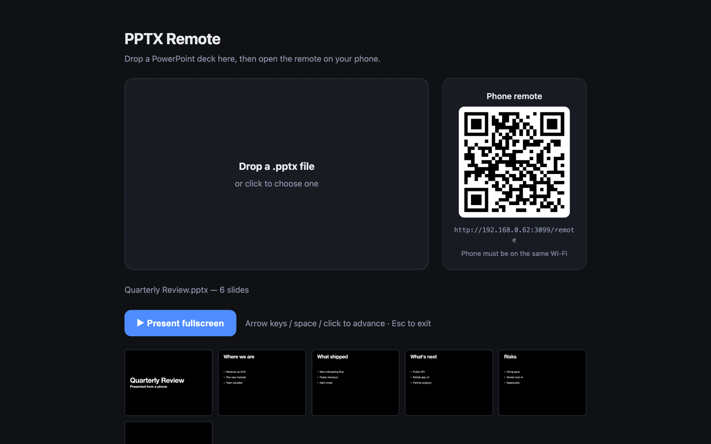
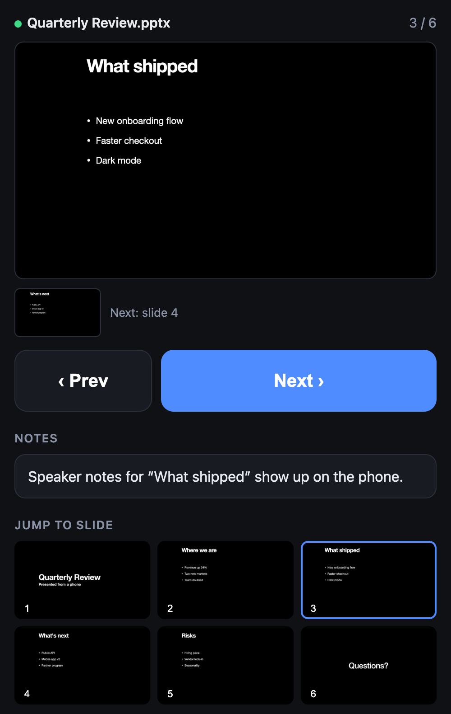

Drop in a PowerPoint file and it plays fullscreen on your Mac. Your phone becomes the clicker: next, back, jump to any slide, and your speaker notes in your hand.


The phone remote is a web page, so there's nothing to install and nothing to pair. Scan the QR code and you're in control.
Every slide appears as a thumbnail on your phone. Tap one and the Mac goes straight there.
The notes from your .pptx show on the phone under the current slide. Only you can see them.
See what's coming up so you can lead into it smoothly.
One click puts the deck in fullscreen on the Mac. The cursor hides, and arrow keys and space still work.
Keynote renders the slides, so fonts, layouts and images come out the way you designed them.
Your slides never leave your computer. The Mac and phone talk to each other directly over your local network.
You need a Mac with Node.js and Keynote (Keynote comes free with macOS). There are no packages to install.
$ git clone https://github.com/AidenJeong8/pptx-remote.git $ cd pptx-remote $ npm start Presenter (open on this Mac): http://localhost:3000/ Remote (open on your phone): http://192.168.x.x:3000/remote
Open localhost:3000 on your Mac and drag in a .pptx file. Conversion takes a few seconds.
Point your phone's camera at the code on the page. Your phone needs to be on the same Wi-Fi as the Mac.
Click Present fullscreen on the Mac. From then on, everything happens from your phone.
A single Node.js file with no dependencies. It asks Keynote to turn your deck into slide images, then keeps every connected screen on the same slide.
Keynote does the rendering. An AppleScript opens the .pptx in Keynote and exports each slide as a PNG, along with your speaker notes.
Instant sync. Screens get updates over Server-Sent Events. When any screen changes the slide, the others follow almost instantly.
Two-way control. Use the Mac keyboard and the phone together. They always stay in step.
No. Each slide shows as a single image, exactly as it looks once all its builds have finished.
Rendering PowerPoint files accurately is hard. Keynote, which comes free with every Mac, already does it very well, so PPTX Remote uses it to draw the slides.
That's expected the first time you convert a deck. Click OK. It's how the server tells Keynote to export your slides.
Make sure your phone is on the same Wi-Fi as the Mac and not on cellular data. Some public and guest networks block devices from reaching each other; a phone hotspot works as a fallback.
Browsers only let a page go fullscreen after someone clicks on that computer. Click once on the Mac, and the phone handles everything after that.
Free and open source. One file, no dependencies.